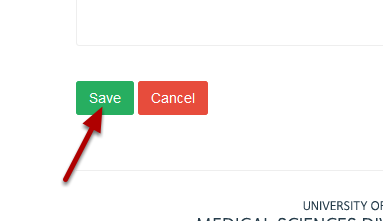
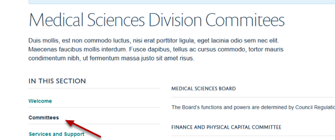

Change the Link Name in the Lefthand Navigation Bar¶
Note
these user guides are being phased out and replaced with the guides on Haiku Knowledge Base
By default the link name for a page on the lefthand navigation is the same as the title of the page. You might want to change this - for example if the page title is quite long.
In this example we will change the link on the left hand navigation from Medical Sciences Division Committees to Committees.
Find your page¶

Go to the page where you would like to change the name of the navigation. Click on Edit on the top tool bar.

Save the change¶
Scroll down to the bottom of the page and click on the Save button.
You will now see that the name of the page in the lefthand navigation has changed to Committees.